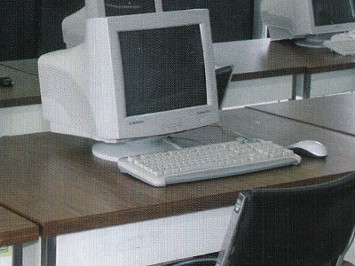

Seguridad Informática
En este laboratoio se imparte docencia de alto nivel en Seguridad Informática (SI), Criptografía y
Areas Relacionadas, formar recursos humanos en SI, crear y dar seguimiento a líneas y proyectos de
investigación, establecer vinculos de colaboración y desarrollo con instituciones y empresas.
Los lineas de ivestigación que se llevan a cabo son los siguientes:
- Diseño e implementación de soluciones de seguridad.
- Aplicaciones seguras, codificación y desarrollo de software seguro.
- Algoritmos criptográficos.
- Cómputo forense.
- Protocolos criptográficos.
- Estándares de seguridad.
- Seguridad en Tecnologías de Información.
- Seguridad en cómputo y dispositivos móviles.
- Detección y prevención de intrusos, algoritmos y protocolos criptográficos.
|

|